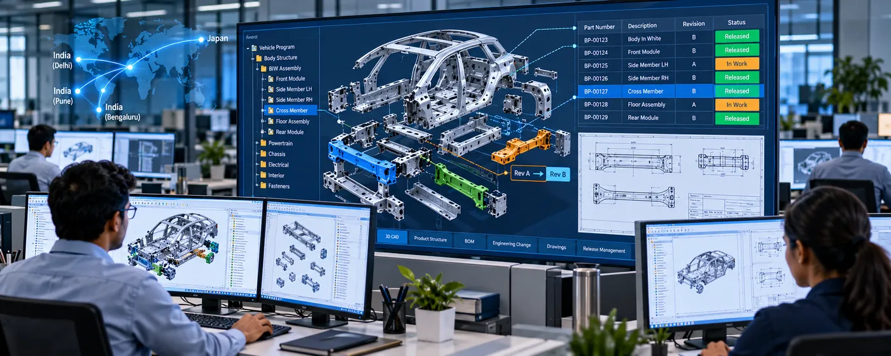

The Assignment
A leading Asian automotive Tier-1 supplier required a centralized Product Lifecycle Management (PLM) environment to improve the management of CAD data, engineering changes and product-release processes across engineering teams in India and Japan.
The existing environment required engineering data and workflows to be brought together within a common platform, enabling geographically distributed teams to access and manage product information more consistently.
Our Approach
CS TECH Ai implemented a Teamcenter-based PLM solution to centralize engineering information and support product-data and change-management workflows across multiple locations.
The engagement included:
- Implementation of Siemens Teamcenter
- Mapping of existing data-release and change-management workflows
- Centralization of CAD and engineering data
- Legacy data migration into Teamcenter
- User and role-based access control
- Configuration of product and part attributes within Teamcenter
- Automatic mapping of required attributes to drawing title blocks
- CAD customization for BOM creation
- Release-data management using lightweight file formats
- Support for 3D data in JT format and 2D information in PDF format
- Integration with Solid Edge
- Development of custom programs for legacy-data migration
The solution established a common PLM environment connecting manufacturing and engineering teams across India and Japan.
Implementation Scale
- 4 locations – 1 in Japan and 3 in India
- 60 users
- 1 TB data volume
- 12 products
- Teamcenter 8.3
- Solid Edge ST4
- 6-month implementation programme